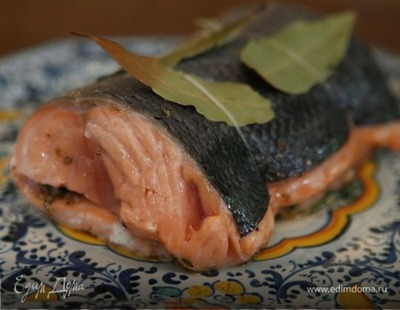

Семга с чесноком
Семга с чесноком
Это один из моих любимых рецептов на ужин. Я уже поделилась им со многими подругами. Самое замечательное, это то, что его очень просто готовить!
Ингредиенты
- 700-800 г. семги (форели)
- 2 желтка
- 4 ст.л. растительного масла
- 2 ст.л. воды
- 2 ст.л. майонеза (сметаны)
- 2-3 зубчика чеснока (измельчить)
- 70-80 г. размороженного шпината
Инструкции
- Семгу разделать и нарезать кубиком 2х2 см, посолить, поперчить, положить в форму для запекания.
- Смешать все ингредиенты соуса и залить соусом рыбу. Запекать 25-30 мин при температуре 200 градусов. За 10 минут до готовности посыпать тертым сыром.
- Обычно я подаю это блюдо с рисовым гарниром.
